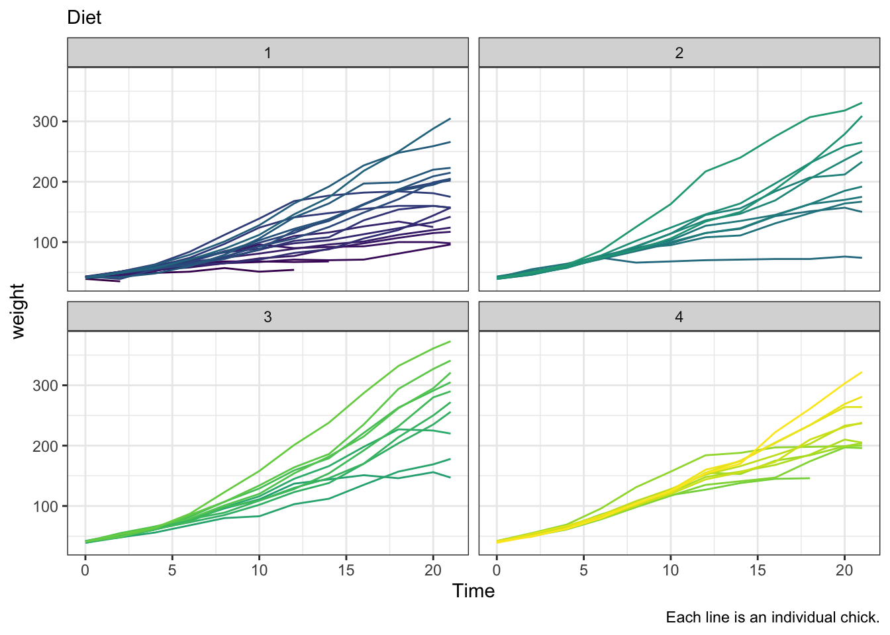

The following code applies to the ChickWeight Dataset, were we have a recording of each chick’s weight for a number of consecutive weeks (Time). Also, the chicks had 4 types of diet, recorded as a categorical variable. Our official aim is to apply a reliable method to predict the weight gain in new chicks in future studies. The unofficial (real) aim is to start understanding how feature selection and model training work.
Note: I adapted this script from the (considerably more complex) articles:
https://towardsdatascience.com/time-series-machine-learning-regression-framework-9ea33929009a
https://hugobowne.github.io/machine-learning-r/03-Supervised-Learning-I/index.html
data("ChickWeight")
summary(ChickWeight)## weight Time Chick Diet
## Min. : 35.0 Min. : 0.00 13 : 12 1:220
## 1st Qu.: 63.0 1st Qu.: 4.00 9 : 12 2:120
## Median :103.0 Median :10.00 20 : 12 3:120
## Mean :121.8 Mean :10.72 10 : 12 4:118
## 3rd Qu.:163.8 3rd Qu.:16.00 17 : 12
## Max. :373.0 Max. :21.00 19 : 12
## (Other):506library(dplyr)
library(ggplot2)
ChickWeight %>%
ggplot() +
geom_path(aes(x=Time, y=weight, col=Chick), show.legend = F) +
facet_wrap(~Diet) +
labs(subtitle = "Diet",
caption = "Each line is an individual chick.")
One way of improving prediction is provide features to describe the time-series. For example, we can add a “lag” variable corresponding to the weight 1 week previously. We can add more than 1 lag (weight 2 weeks before, 3 weeks before…). Let’s start with 1 lag.
cw_ml <- as.data.frame(ChickWeight) %>%
group_by(Chick) %>%
mutate(weight_1U_ago=lag(weight, 1),
diff_1U=weight-weight_1U_ago) %>%
filter(!is.na(weight_1U_ago))
head(cw_ml)## # A tibble: 6 x 6
## # Groups: Chick [1]
## weight Time Chick Diet weight_1U_ago diff_1U
## <dbl> <dbl> <ord> <fct> <dbl> <dbl>
## 1 51 2 1 1 42 9
## 2 59 4 1 1 51 8
## 3 64 6 1 1 59 5
## 4 76 8 1 1 64 12
## 5 93 10 1 1 76 17
## 6 106 12 1 1 93 13We save one portion of the data (the test set) for later, to validate our analysis.
library(caret)
chicks <- unique(cw_ml$Chick)
## 75% of the sample size
smp_size <- floor(0.75 * length(chicks))
## set the seed to make your partition reproducible
set.seed(88)
train_chicks <- sample(seq_len(length(chicks)), size = smp_size)
train <- subset(cw_ml, Chick %in% train_chicks)
library(Hmisc)
# "A" %nin% "B"
test <- subset(cw_ml, Chick %nin% train_chicks)We need a baseline model to start off and compare to when we calculate the error metrics. I don’t know much of chicks weight, so I’ll take the assumption (a bit stretchy) that weight does not change across time.
# Build baseline model
train_pred <- train %>%
group_by(Chick) %>%
mutate(pred_bas=head(weight_1U_ago, 1))
head(train_pred)## # A tibble: 6 x 7
## # Groups: Chick [1]
## weight Time Chick Diet weight_1U_ago diff_1U pred_bas
## <dbl> <dbl> <ord> <fct> <dbl> <dbl> <dbl>
## 1 51 2 1 1 42 9 42
## 2 59 4 1 1 51 8 42
## 3 64 6 1 1 59 5 42
## 4 76 8 1 1 64 12 42
## 5 93 10 1 1 76 17 42
## 6 106 12 1 1 93 13 42Now we have to evaluate how the baseline model perform, in terms of RMSE, through cross-validation. We can consider each unit of Time as a fold.
t <- unique(train_pred$Time)
bas_error <- data.frame()
for (i in 2:length(t)) {
tr_temp = subset(train_pred, Time==t[i])
n = nrow(tr_temp)
sq_d = (tr_temp$weight-tr_temp$pred_bas)^2
s_sq_d = sum(sq_d)/n
rmse = round(sqrt(s_sq_d), 2)
bas_error = rbind(bas_error,
cbind(fold=i,
Time=t[i],
Error=rmse,
N_Error=round(rmse/round(mean(tr_temp$weight), 2), 2)))
}
bas_error## fold Time Error N_Error
## 1 2 4 19.15 0.32
## 2 3 6 33.85 0.46
## 3 4 8 51.90 0.57
## 4 5 10 69.34 0.65
## 5 6 12 91.99 0.73
## 6 7 14 107.66 0.76
## 7 8 16 132.90 0.81
## 8 9 18 158.89 0.84
## 9 10 20 182.74 0.87
## 10 11 21 193.48 0.88Total error for the model:
rmse_bas <- mean(bas_error$Error)
rmse_bas## [1] 104.19Total normalised error for the model:
rmse_bas_n <- mean(bas_error$Error)/mean(train_pred$weight)
rmse_bas_n## [1] 0.8153079The error gets bigger and bigger, because clearly this assumption does not fit the data. We can choose to improve the baseline model with various estimator, for example, we may use linear regression or random forest. In this case, we go for exponential regression.
We select the variables:
y <- train$weight
x <- cbind(train$Time, train$weight_1U_ago, train$diff_1U)And run the model on the train set:
e_lm1 <- lm(log(y) ~ x,
data=train)We calculate the predicted values based on this model:
train_pred$predx <- predict(e_lm1)
train_pred$predx_w <- exp(train_pred$predx)And estimate the error:
exp_error <- data.frame()
for (i in 2:length(t)) {
tr_temp = subset(train_pred, Time==t[i])
n = nrow(tr_temp)
sq_d = (tr_temp$weight-tr_temp$predx_w)^2
s_sq_d = sum(sq_d)/n
rmse = round(sqrt(s_sq_d), 2)
exp_error = rbind(exp_error,
cbind(fold=i,
Time=t[i],
Error=rmse,
N_Error=round(rmse/round(mean(tr_temp$weight), 2), 2)))
}
exp_error## fold Time Error N_Error
## 1 2 4 3.09 0.05
## 2 3 6 3.95 0.05
## 3 4 8 8.00 0.09
## 4 5 10 12.37 0.12
## 5 6 12 12.18 0.10
## 6 7 14 18.15 0.13
## 7 8 16 14.32 0.09
## 8 9 18 27.13 0.14
## 9 10 20 35.09 0.17
## 10 11 21 22.26 0.10Total error for the model:
rmse_expx <- mean(exp_error$Error)Total normalised error for the model:
rmse_expx_N <- mean(exp_error$Error)/mean(train_pred$weight)The model may be further improved by adding more lag features to the dataset. Of course, adding more and more features determine a loss of data, so there is a limit that is reached when the number of features exceeds the fit to the data.
Adding a 2nd feature:
trainx <- as.data.frame(train) %>%
group_by(Chick) %>%
mutate(weight_2U_ago=lag(weight, 2),
diff_2U=weight-weight_2U_ago) %>%
filter(!is.na(diff_2U))yx <- trainx$weight
xx <- cbind(trainx$Time, trainx$weight_1U_ago, trainx$diff_1U,
trainx$weight_2U_ago, trainx$diff_2U)e_lm2 <- lm(log(yx) ~ xx,
data=trainx)trainx$pred <- predict(e_lm2)
trainx$pred_w <- exp(trainx$pred)exp_error <- data.frame()
for (i in 2:length(t)) {
tr_temp = subset(trainx, Time==t[i])
n = nrow(tr_temp)
sq_d = (tr_temp$weight-tr_temp$pred_w)^2
s_sq_d = sum(sq_d)/n
rmse = (sqrt(s_sq_d))
exp_error = rbind(exp_error,
cbind(fold=i,
Time=t[i],
Error=rmse,
N_Error=(rmse/(mean(tr_temp$weight)))))
}
exp_error## fold Time Error N_Error
## 1 2 4 NaN NaN
## 2 3 6 5.651732 0.07669142
## 3 4 8 5.503049 0.06086321
## 4 5 10 8.580043 0.08096502
## 5 6 12 10.497072 0.08323670
## 6 7 14 12.885790 0.09120377
## 7 8 16 13.227979 0.08018386
## 8 9 18 23.375875 0.12395193
## 9 10 20 31.305044 0.14870685
## 10 11 21 23.238542 0.10536035Total error for the model:
rmse_expxx <- mean(exp_error$Error, na.rm = TRUE)Total normalised error for the model:
rmse_expxx_N <- mean(exp_error$Error, na.rm = TRUE)/mean(trainx$weight)Adding a 3rd feature:
trainxx <- as.data.frame(trainx) %>%
group_by(Chick) %>%
mutate(weight_3U_ago=lag(weight, 3),
diff_3U=weight-weight_3U_ago) %>%
filter(!is.na(diff_3U))yxx <- trainxx$weight
xxx <- cbind(trainxx$Time, trainxx$weight_1U_ago, trainxx$diff_1U,
trainxx$weight_2U_ago, trainxx$diff_2U,
trainxx$weight_3U_ago, trainxx$diff_3U)e_lm3 <- lm(log(yxx) ~ xxx,
data=trainxx)trainxx$pred <- predict(e_lm3)
trainxx$pred_w <- exp(trainxx$pred)exp_error <- data.frame()
for (i in 2:length(t)) {
tr_temp = subset(trainxx, Time==t[i])
n = nrow(tr_temp)
sq_d = (tr_temp$weight-tr_temp$pred_w)^2
s_sq_d = sum(sq_d)/n
rmse = (sqrt(s_sq_d))
exp_error = rbind(exp_error,
cbind(fold=i,
Time=t[i],
Error=rmse,
N_Error=(rmse/(mean(tr_temp$weight)))))
}
exp_error## fold Time Error N_Error
## 1 2 4 NaN NaN
## 2 3 6 NaN NaN
## 3 4 8 NaN NaN
## 4 5 10 NaN NaN
## 5 6 12 8.978738 0.07119704
## 6 7 14 9.722230 0.06881255
## 7 8 16 10.536730 0.06387036
## 8 9 18 16.820685 0.08919265
## 9 10 20 23.805820 0.11308364
## 10 11 21 23.469870 0.10640916Total error for the model:
rmse_expxxx <- mean(exp_error$Error, na.rm = TRUE)Total normalised error for the model:
rmse_expxxx_N <- mean(exp_error$Error, na.rm = TRUE)/mean(trainx$weight)data.frame(Model=c("baseline", "exp+1f", "exp+2f", "exp+3f"),
RMSE=c(rmse_bas, rmse_expx, rmse_expxx, rmse_expxxx),
"Normalised RMSE"=c(rmse_bas_n, rmse_expx_N, rmse_expxx_N, rmse_expxxx_N))## Model RMSE Normalised.RMSE
## 1 baseline 104.19000 0.8153079
## 2 exp+1f 15.65400 0.1224957
## 3 exp+2f 14.91835 0.1028988
## 4 exp+3f 15.55568 0.1072948The RMSE gets smaller by adding 1-2 features, but starts to grow again when we add 3 features, meaning we are exceeding the fit to the data. We will then test adding a categorical predictor, diet, to the model including 2 features.
xp <- cbind(trainx$Time,
trainx$weight_1U_ago, trainx$diff_1U,
trainx$weight_2U_ago, trainx$diff_2U,
trainx$Diet)e_lmp <- lm(log(yx) ~ xp,
data=trainx)trainx$pred_exp_p <- predict(e_lmp)
trainx$pred_exp_pw <- exp(trainx$pred_exp_p)exp_error <- data.frame()
for (i in 2:length(t)) {
tr_temp = subset(trainx, Time==t[i])
n = nrow(tr_temp)
sq_d = (tr_temp$weight-tr_temp$pred_exp_pw)^2
s_sq_d = sum(sq_d)/n
rmse = round(sqrt(s_sq_d), 2)
exp_error = rbind(exp_error,
cbind(fold=i,
Time=t[i],
Error=rmse,
N_Error=round(rmse/round(mean(tr_temp$weight), 2), 2)))
}
exp_error## fold Time Error N_Error
## 1 2 4 NaN NaN
## 2 3 6 5.18 0.07
## 3 4 8 4.51 0.05
## 4 5 10 7.62 0.07
## 5 6 12 9.69 0.08
## 6 7 14 12.05 0.09
## 7 8 16 12.11 0.07
## 8 9 18 21.26 0.11
## 9 10 20 29.31 0.14
## 10 11 21 20.00 0.09Total error for model:
rmse_expx_p <- mean(exp_error$Error, na.rm = TRUE)Total normalised error for model:
rmse_expx_p_N <- rmse_expx_p/mean(trainx$weight)data.frame(Model=c("exp+2f", "exp+2f+1p"),
RMSE=c(rmse_expxx, rmse_expx_p),
"Normalised RMSE"=c(rmse_expxx_N, rmse_expx_p_N))## Model RMSE Normalised.RMSE
## 1 exp+2f 14.91835 0.10289880
## 2 exp+2f+1p 13.52556 0.09329207The RMSE diminisged slightly, indicating a better predictive power.
Testing on “unseen” data gives an indication of the bias of the model, i.e., how much it overfits the training data.
testx <- as.data.frame(test) %>%
group_by(Chick) %>%
mutate(weight_2U_ago=lag(weight, 2),
diff_2U=weight-weight_2U_ago) %>%
filter(!is.na(diff_2U))yx <- testx$weight
xp <- cbind(testx$Time, testx$weight_1U_ago, testx$diff_1U,
testx$weight_2U_ago, testx$diff_2U,
testx$Diet)e_lmp_test <- lm(log(yx) ~ xp,
data=testx)testx$pred_exp_p <- predict(e_lmp_test)
testx$pred_exp_pw <- exp(testx$pred_exp_p)exp_error <- data.frame()
for (i in 2:length(t)) {
tr_temp = subset(testx, Time==t[i])
n = nrow(tr_temp)
sq_d = (tr_temp$weight-tr_temp$pred_exp_pw)^2
s_sq_d = sum(sq_d)/n
rmse = round(sqrt(s_sq_d), 2)
exp_error = rbind(exp_error,
cbind(fold=i,
Time=t[i],
Error=rmse,
N_Error=round(rmse/round(mean(tr_temp$weight), 2), 2)))
}
exp_error## fold Time Error N_Error
## 1 2 4 NaN NaN
## 2 3 6 6.55 0.09
## 3 4 8 4.74 0.05
## 4 5 10 7.31 0.06
## 5 6 12 9.94 0.07
## 6 7 14 11.70 0.08
## 7 8 16 10.05 0.06
## 8 9 18 17.25 0.09
## 9 10 20 31.40 0.15
## 10 11 21 38.77 0.18Total error for the model:
rmse_expx_p_test <- mean(exp_error$Error, na.rm = TRUE)Total normalised error for the model:
rmse_expx_p_N_test <- rmse_expx_p_test/mean(trainx$weight)data.frame(Model=c("exp+2f+1p (train)", "test"),
RMSE=c(rmse_expx_p, rmse_expx_p_test),
"Normalised RMSE"=c(rmse_expx_p_N, rmse_expx_p_N_test))## Model RMSE Normalised.RMSE
## 1 exp+2f+1p (train) 13.52556 0.09329207
## 2 test 15.30111 0.10553890The test RMSE seems acceptable.